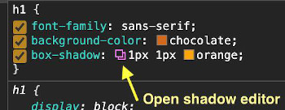

- propriedade 'box-shadow': podemos usar uma 'shorthand' cuja ordem a ser respeitada é (1) horizontal (2) vertical (3) espalhamento (4) cor da sombra
- dá pra definir as configurações de 'box-shadow' com a ajuda do DevTool do Google Chrome
-
Defina quaisquer valores para a propriedade 'box-shadow' de um elemento desejado na tag <style>
- vá no DevTool e selecione o seletor para o qual você quer editar os valores de 'box-shadow'
- na caixa 'Style', dentro da seção do seletor que você selecionou, clique no ícone 'Box shadow editor 